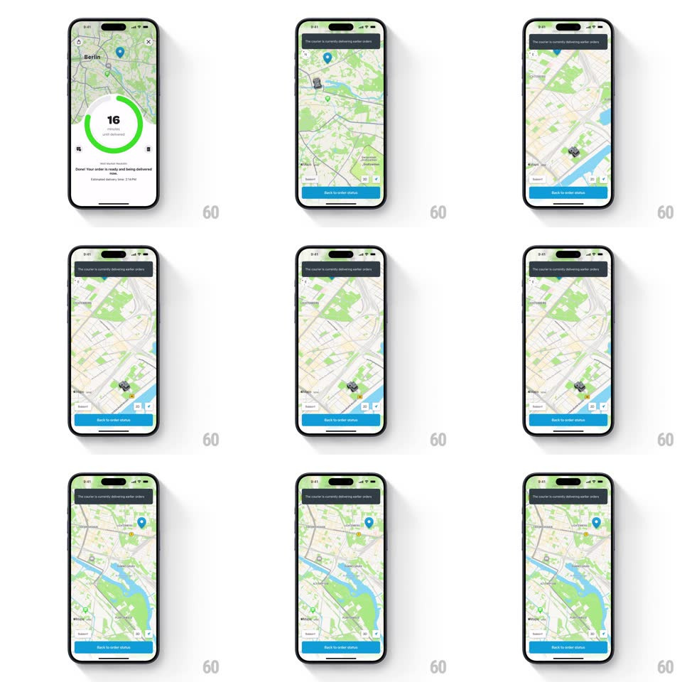

Media
Frame-by-frame

Rebuild this interaction 1:1: Wolt's timer-to-map transition - the delivery timer sheet expands into a full-screen 3D map as the camera zooms out and tilts, following the courier between pins.

Rebuild this interaction 1:1: Wolt's timer-to-map transition - the delivery timer sheet expands into a full-screen 3D map as the camera zooms out and tilts, following the courier between pins.
## Integration
Integration: stack-agnostic spec - springs given as stiffness/damping, timed motions as duration + curve; map every value to your framework and animation library of choice.
## Scene
A Wolt order screen: a Berlin map behind a bottom sheet holding the circular green delivery timer ("16 minutes until delivered"). Expanded state: full-screen map with a top banner ("The courier is currently delivering earlier orders"), a courier marker, the destination pin, and a "Back to order status" button.
## Motion spec
Pattern: sheet-to-fullscreen map zoom with camera tilt, ~700ms.
- Trigger: tapping the map (or its expand affordance) slides the timer sheet down and off (spring ~340/26, 400ms) while the map expands to full-bleed under it - the map is visible throughout, no cut.
- Camera: the map camera eases to a wider zoom (about 2 zoom levels) with a pitch tilt toward ~45deg (600ms, ease-in-out), both animated together so the city tips into perspective.
- Follow: the camera then drifts between the courier marker and destination pin (1.2s pans, ease-in-out) keeping both in frame.
- Controls: the banner and Back button fade in over the map (250ms) after the camera settles.
- Back: reverses - camera returns to the sheet framing as the sheet springs back up.
## Calibration
- Sheet dismissal and camera move overlap; neither waits for the other.
- Tilt and zoom are coupled - never zoom flat then tilt.
## Reduced motion
Fade between states; camera jumps to final framing.
## Don't miss
- The map never reloads or tiles-pop during the transition - it is the same map instance.
- The timer ring keeps counting while the sheet is visible.